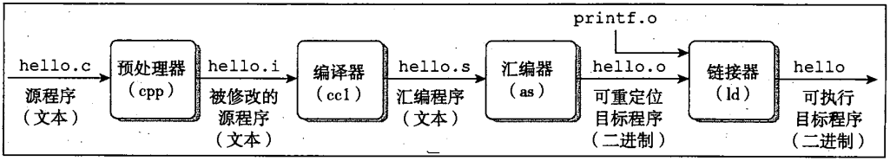
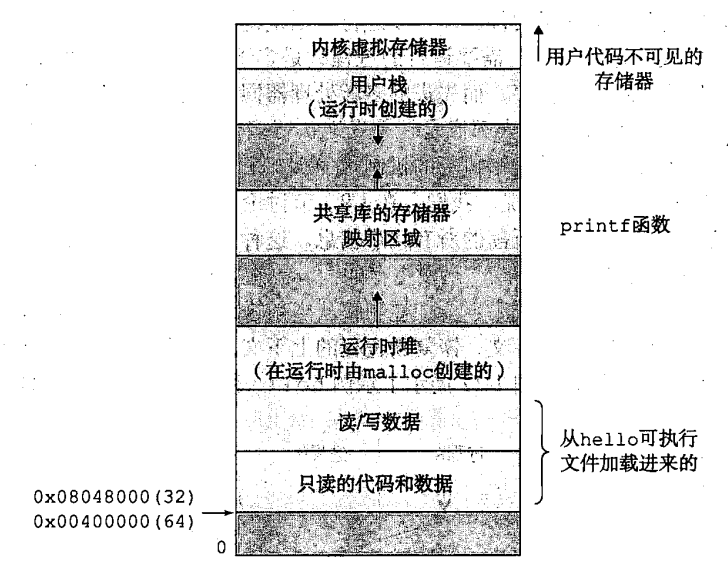

计算机系统介绍
- 信息 = 位 + 上下文
1. 编译系统(compilation system)

- 预处理阶段 处理器(cpp)根据以#开头的命令，修改原始的C程序。如hello.c中第一行
#include <stdio.h>告诉预处理器读取系统头文件stdio.h的内容，并插入到程序文本中。得到另一个C程序，通常以.i作为文件扩展名。 - 编译阶段 编译器(ccl)将文本文件
hello.i翻译成文本文件hello.s,它包含一个汇编语言程序。 - 汇编阶段 汇编器(as)将
hello.s翻译成机器语言指令，把这些指令打包成一种可重定位目标程序(reocatable object program)的格式,并将结果保存在目标文件hello.o中。 - 链接阶段 hello程序调用了
printf函数，它是C编译器提供的标准函数。printf函数存在于一个名为printf.o的单独预编译好的目标文件中。链接器(ld)就是负责将printf.o合并到hello.o程序中。结果就得到hello文件，他是可执行目标文件。
2. 操作系统
2.1 虚拟存储器
虚拟存储器为每个进程提供一个假象，每个进程都在独占的使用主存。每个进程空间看到的是一致的存储器，成为虚拟地址空间。 